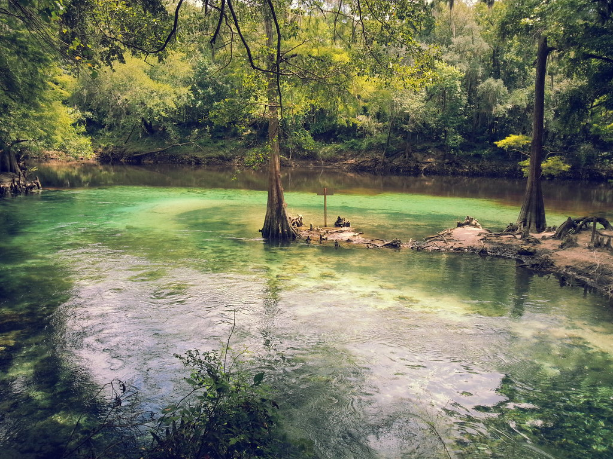

Everyone in this town knew eachother. It was a very different environment to any other place I have ever lived in. Everybody cared for eachother as much as they cared for themselves. Sometimes I do miss this environment, but it is very hard to imagine myself living there today, just because of how different I have grown up and my interests today.
Florida
 My first days in the United States were spent in the sunshine state. I was very accustomed to my way of living in a spanish speaking country,
and moving into a different lifestyle like this was very difficult for me at first. I was in the third grade when my parents put me in a
public school. This was already different, since I went to a Catholic private school where I lived before. I had trouble
communicating with my classmates at school, which led me to hating having to attend school. My parents had to drop me off at school crying multiple times, which sounds terrible,
but they knew it was what was best for me at the time. I picked up the English language very quick this way since I had no other
choice.
My first days in the United States were spent in the sunshine state. I was very accustomed to my way of living in a spanish speaking country,
and moving into a different lifestyle like this was very difficult for me at first. I was in the third grade when my parents put me in a
public school. This was already different, since I went to a Catholic private school where I lived before. I had trouble
communicating with my classmates at school, which led me to hating having to attend school. My parents had to drop me off at school crying multiple times, which sounds terrible,
but they knew it was what was best for me at the time. I picked up the English language very quick this way since I had no other
choice.
By the time I reached fifth grade, I was top in my class in school, which is surprising seeing as all of these
other kids had been speaking the english language since they were babies, and I had only been around it for about two years. These were the most interesting school years
of my life.
Georgia
 Most of my life has been spent in the beautiful state of Georgia! I have lived in the northwest, southwest, and now towards the northeast in Athens. I would have to say that my favorite city that I have lived at in this state is Valdosta. There is something about the south that I absolute adore. The weather is on average warmer than the north, which is a big plus for me considering I cannot stand cold weather. This must be because of my warm Puerto Rican blood. Valdosta also had very heart-warming people. The people from there are very welcoming, compared to the people living closer to the city. I have found that they are a bit less friendly than the people living in smaller towns. I have only been living in Athens since the beginning of the school year, and I am very excited to see what the classic city has instore for me, along with the university of my dreams: The University of Georgia. To the right of this text is an image showing a small pond in the city of Valdosta during beautiful spring weather.
A link to my facebook